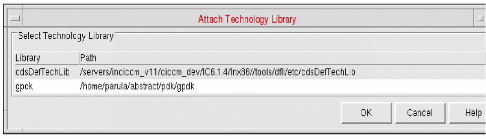

Attaching Technology Information to a Library in Abstract Generator
The Attach Technology Library form allows you to attach and associate existing technology library information to the current cell library. This form lists all the libraries in the cds.lib file that have their own techfile.cds file contained in the library itself. The library list displayed also includes cdsDefTechLib, which is the default technology library. You cannot import a technology LEF file if the default technology file, cdsDefTechLib, is already attached to a cell library. If you attempt to do this, an error message will display.
If you are importing an existing library into Abstract Generator and the library has its own technology file (tech.db), Abstract Generator uses that file as the main source of technology information. If the existing library has a different technology library attached, Abstract Generator uses that instead. If your library has an attached technology file, Cadence recommends that you move tech.db file out of the library directory before you start generating abstracts so that possible conflicts can be avoided.
-
Choose File – Library – Attach Technology.
The Attach Technology Library form is displayed. The Attach Library menu option is available only if a cell library is already open.
 - Select a library and click OK.
If you choose to attach a library, Abstract Generator attempts to combine this library to the current library and load it into the software. If you attempt to attach the same technology file that is already associated with the current library, you will be given the opportunity to reattach that technology library.
Related Topics
Attach Technology Library Form
Return to top